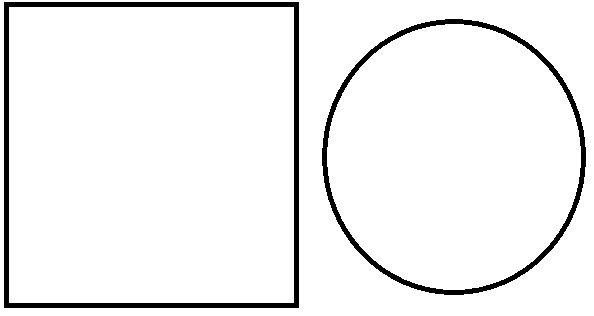

- КубГУ
- Главная страница КубГУ

- Сокращенная ссылка на внутреннюю страницу
- Ссылка на начало списка
- Ссылка с параметрами
- Ссылка с параметром id
- Относительная ссылка на страницу в текущем каталоге
- Относительная ссылка на страницу в каталоге about
- Относительная ссылка на страницу в каталоге на уровень выше
- Относительная ссылка на страницу в каталоге на два уровня выше
- В этом абзаце содержится контекстная ссылка
- Ссылка на фрагмент сайта КубГУ
-

- Ссылка с пустым href
- Ссылка без href
- Ссылка с запретом перехода для поисковиков
-